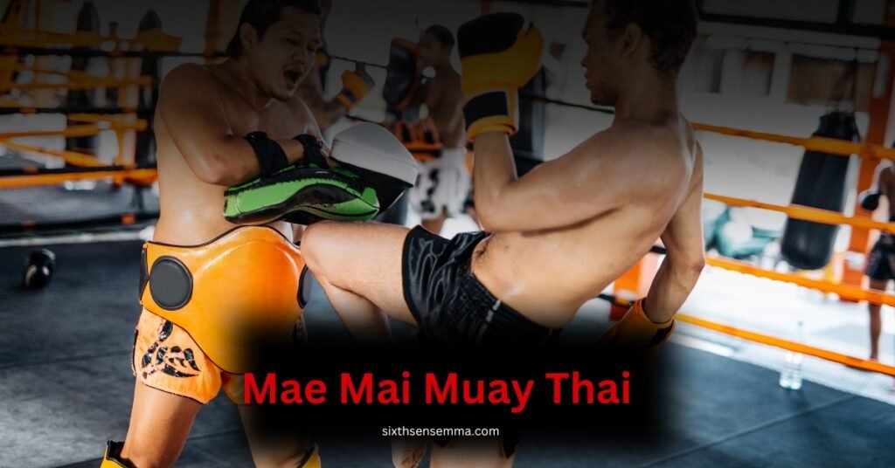
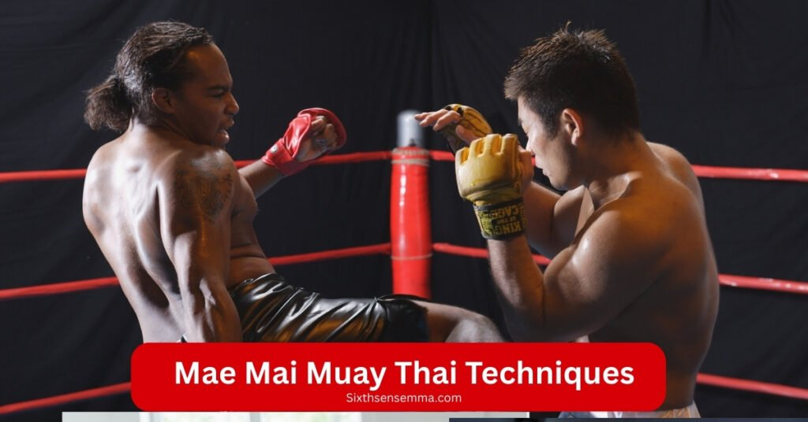

Mae Mai Muay Thai What is it For Beginners

Mae Mai Muay Thai what is it , it’s the foundation and soul of the martial art that every fighter must first learn. Made up of 15 fundamental techniques, Mae Mai teaches the basic yet powerful movements that shape a student’s entire Muay Thai journey. Developed on the battlefield and refined in the ring, these actions are designed for both self defense and real combat, building timing, discipline, and strategy.
Passed down by Kru Muay, they hold deep meaning, combining both physical skill and mental strength. Mae Mai is not just about how to fight it’s about understanding the principles, history, and purpose of every move, forming the true essence of Muay Thai’s art.
What Is Mae Mai muay thai ?
Mae Mai Muay Thai what is it this is a question many beginners ask when they first hear about Thailand’s national martial art. The most well-known fighting style in Thailand is deeply based on Mae Mai Muay Thai, which includes 15 powerful and essential techniques known as the “mother techniques.”
These core moves have been passed down for generations and are rooted in ancient Siamese battlefield traditions. Learning Mae Mai is not just about fighting it’s about understanding the history, balance, and spirit of real Muay Thai.
Every student begins their training with Mae Mai because it teaches balance, positioning, and timing, which are essential for both offensive and defensive fighting. The style includes punches, kicks, knees, elbows, and sweeping tactics that are effective in real fight situations.
Some techniques are named after animals like the elephant’s tusk or crocodile strikes, showing the colourful, clever, and symbolic structure of this traditional art. It builds an all round skillset with clear principles, allowing students to learn how to block, counter, defend, and attack with purpose.
It is not just about remembering each technique, but also understanding the meaning, the vision, and how every action fits into the larger strategy. For those who want to become a strong warrior in Muay Thai, mastering these mother style moves is the first and most important step in learning the style that forms the backbone of all advanced techniques.
Why Mae Mai Matters
- Builds the foundation for all future Muay Thai techniques and styles.
- Contains 15 major mother techniques that are deeply rooted in ancient Siamese combat.
- Helps every student develop strong defensive and offensive skills from the very first day.
- Sharpens timing, balance, and positioning for real fight situations.
- Teaches how to block, counter, and strike with purpose and control.
- Encourages understanding of distance, quick actions, and efficient strategy.
- Uses symbolic names like crocodile strikes and elephant’s tusk to make learning more colourful, clever, and memorable.
- Forms the backbone of training, acting as a complete toolkit for both students and advanced fighters.
- Helps learners remember the principles and meaning behind every move, not just the technique itself.
- Promotes an all round, traditional, and powerful fighting style built on centuries of wisdom.
Why Are These Techniques Important?
All future talents are built on the foundation of Mae Mai Muay Thai methods. The framework of Muay Thai would collapse in their absence.
1-Mae Mai Builds the Base for Luk Mai
Mae Mai gives every student the strong foundation needed to later master Luk Mai, the more advanced and complex techniques of Muay Thai. These 15 core movements are the first layer that teaches how to strike, counter, and reposition in the middle of a fight, and without them, the flow of Luk Mai would collapse. Just like a building needs a strong base, fighters must internalize Mae Mai to handle the shifting demands of higher level combat with power, precision, and control.
2-Crafted Over Centuries for Real Combat
The Mae Mai techniques were not made in theory they were crafted and tested over a century of real battles, both in the battlefield and the ring. They are not flashy; they are measured, effective, and shaped by the pressure of real world challenges. Each move was built to handle chaos, to help fighters survive and win. That’s why these movements remain valuable they’re not outdated traditions but tools still used today in serious Muay Thai combat.
3-Teaches Balance, Timing & Control
Without balance, you fall. Without timing, you miss. Without control, you waste your energy. Mae Mai teaches all three as its root principles. Every movement is drilled to make your body react under pressure with stability and purpose. Whether it’s shifting weight during a strike, stepping at the right moment, or controlling distance against an opponent, Mae Mai builds the mechanics that make you not just a fighter but a smart, measured, and wise one.
Detailes
| Importance | Detail |
|---|---|
| Foundation | Mae Mai forms the bedrock before moving on to Luk Mai |
| Proven in Real Combat | Developed over centuries by Siamese warriors and battlefield fighters |
| Teaches Core Skills | Instills balance, timing, control both key for fighting and life |
Meet the 15 Mae Mai Techniques

We’ve grouped the 15 core techniques into three easy to remember parts, each with simple names and child friendly explanations:
- Salab Fan Pla : A smooth sidestep to dodge a strike and return with a counterattack.
- Paksa Waeg Rang : The “bird nest wing guard” to block incoming attacks with both arms.
- Chawa Sad Hok : A zig zag step to the side followed by a strong kick to break the guard.
- Inao Taeng Grit : A defensive twist used to duck beneath a blow and unleash a knee or elbow is known as “Inao Taeng Grit
- Yo Khao Phra Sumen : A strong upward knee strike to the ribs or body while clinching.
- Ta Ten Kham Fak : A low spear like kick to the leg, followed by a sharp push to off balance.
- Hak Nguang Aiyara : A sharp elbow across the neck to “break the elephant’s trunk”.
- Hak Kor Erawan : A powerful downward elbow targeting the opponent’s shoulder or collarbone.
- Jorake Fad Hang : The “crocodile tail whip” a spinning heel kick to surprise from the side.
- Pak Look Toy : A defensive push kick to the body to keep distance or reset the fight.
- Morn Yan Lak : A grab and twist of the opponent’s arms followed by a close range punch.
- Faak : A simple but powerful punch or jab used in flurry or to open up the guard.
- Virunhok Glab : A sudden back step and counter to turn defense into attack.
- Dab Chawala : A sharp uppercut elbow in close combat, aimed at the chin or jaw.
- Toy : A tricky low kick or foot sweep to throw the opponent off balance.
These 15 moves are the core of Mae Mai simple, effective, and crafted for real combat.
Why This Makes Sense
- Teaching these in groups of five makes it easier to remember and practice them step by step.
- Each technique is like a little story such as “giant catches monkey” or “breaks elephant’s neck” which helps students learn and recall them with ease
- Mastering all 15 builds a strong, balanced foundation to confidently move on to Luk Mai, the more advanced follow up techniques
What defines Luk Mai from Mae Mai?
Originally created for wartime survival,Mae Mai Muay Thai refers to the 15 fundamental Muay Thai techniques that teach simple yet crucial movements for assault, defense, and balance. These techniques form the core and are taught to every student as the first step.
Luk Mai, on the other hand, is a refined, advanced set of variations that evolve from Mae Mai. It involves strategic deception, feints, and complex counters, making it suitable for more experienced fighters who understand the mechanics and timing of the art.
Mae Mai vs. Luk Mai Comparison Table
| Feature | Mae Mai | Luk Mai |
|---|---|---|
| Meaning | “Mother Techniques” | “Advanced or Minor Techniques” |
| Complexity | Basic and structured | Complex, fluid, and adaptable |
| Purpose | Build foundation and form | Add variation, creativity, and refinement |
| Techniques Count | 15 core techniques | Multiple variations of Mae Mai |
| Focus | Offensive and defensive basics | Counters, deception, feints |
| Used By | Beginners, students | Advanced practitioners |
| Tradition | Taught openly to all | Traditionally passed to trusted students |
| Role in Muay Thai | Backbone of Muay Thai | Next level in mastering Muay Thai |
| Link to Muay Boran | Original battlefield techniques | Modern strategic adaptations |
| Teaching Style | Structured, rule based | Flexible, strategic, secretive |
Benefits of Mae Mai Muay Thai
1. Balance & Body Control
Mae Mai teaches fighters how to stay stable, grounded, and aware of their body’s movement during a fight. Techniques like Ta Ten Kham Fak and Pak Look Toy help improve weight distribution and shifting, allowing the fighter to turn, block, or strike without losing balance. This control becomes critical when opponents apply pressure, and it allows for smooth stepping, precise angles, and powerful delivery in both offensive and defensive actions.
2. Timing & Speed
Fighters who master Mae Mai develop sharp reflexes and the ability to react instantly. Techniques like Salab Fan Pla and Chawa Sad Hok train you to move, deflect, and counter with perfect timing, turning defense into attack within seconds. The speed doesn’t come from rushing it’s from learning when to strike and how to flow with the opponent’s movement, making each technique feel natural and effective.
3. Surprise & Strategy
Mae Mai builds smart fighters who know how to deceive, set up surprises, and apply strategy in real time. Techniques like Jorake Fad Hang or Hak Nguang Aiyara are not just about power they’re about catching the opponent off guard with an unexpected angle, a sudden elbow, or a shift in rhythm. The goal is not just to strike, but to think, adapt, and control the flow of the fight using unpredictable and intelligent actions.
Lifelong Benefits Beyond the Ring
Through Mae Mai you also grow skills that go far beyond fighting:
| Skill | Everyday Benefits |
|---|---|
| Confidence | Mastering these techniques builds inner strengthyou learn you can handle challenges, big or small. |
| Focus & Discipline | Training requires concentration and consistency breaking complex moves down and refining them step by step enhances mental clarity. |
| Stress Relief | Physical training clears your mind, lowers stress, and releases feel good endorphins. |
| Resilience | Facing tough drills and sparring builds toughness: you learn to stay steady under pressure and bounce back from setbacks. |
Can kids learn these at home?
Yes, kids can absolutely learn Mae Mai at home, safely and effectively. Kids can definitely learn Mae Mai techniques at home with proper supervision and safe training methods. Using basic gear like pads and gloves, they can practice shadow boxing, push kicks, and slip and elbow drills to develop footwork, coordination, and self control without full contact.
Repeating these moves builds discipline, patience, and confidence, while the traditional names and storytelling make learning fun and engaging. This kind of practice strengthens both the body and mind, promotes focus, and serves as a great stress busting workout.
With consistent effort, kids can safely master Mae Mai fundamentals at home, growing their skills and self belief in a supportive environment.
How long to learn basics?
With consistent 3×‑a‑week practice, expect to learn Mae Mai basics in about 3–6 months, and become really solid overall by 6–12 months.
Why Choose Sixth Sense MMA Trusted Partner
At Sixth Sense MMA, your training is guided by a dedicated team of certified Muay Thai coaches who specialize in authentic Mae Mai instruction. Whether you’re just starting out or refining your form, our trainers provide hands-on support with proper technique, patient feedback, and real fight insight.
We believe in teaching Muay Thai the right way from the roots up. That’s why we focus on the original 15 Mae Mai techniques, helping every student build strong fundamentals before moving to advanced levels. No shortcuts, no guesswork, just honest, traditional training with real results.
Our coaching team doesn’t just teach they inspire, mentor, and support every student like family.
Benefits of Training with Us
- Certified Muay Thai Coaches : Our instructors are trained in traditional and modern Muay Thai systems.
- Structured Programs for All Levels : From beginner to fighter, we’ve got step by step plans.
- Safe Training Environment : Clean mats, safe gear, and injury preventive guidance.
- Focus on Authentic Techniques : We teach real Mae Mai and Luk Mai, not watered down versions.
- Flexible Class Schedules :Morning, evening, and weekend batches are available for flexible class schedules.
- Kids & Women Friendly Programs : Respectful and inclusive training for everyone.
- Online Video Support : Access to exclusive technique breakdowns for home practice.
Customer Reviews:
“I never understood Muay Thai until I trained here. The Mae Mai section was game changing!” – Adam R.
“Their coaches explain every move so well. My son now practices confidently.” – katherin.
“Best gym I’ve joined. Every class is full of real technique, not fluff.”.
– Rachel M.
“They showed me how Mae Mai improves my fight flow. Big respect.” – Daniel P.
“The facility is spotless and the coaching top tier.” – Sarah A.
“Finally found a gym that teaches the real Thai style. Recommended!” – Daniel G.
Ready to Start? Contact Us
Want to learn real Mae Mai Muay Thai from professionals?
Click the button below and talk directly to our team.
Visit Our Contact Page
Conclusion
Mae Mai Muay Thai what is it , it’s the blueprint for any fighter who wants to train with purpose, power, and strategy. At Sixth Sense MMA, we treat Mae Mai with the care it deserves because it’s not just traditional, it’s essential.
This training is where you build your foundation, where moves are sharpened, and where real confidence begins. From timing to balance, every technique is designed to make you faster, smarter, and stronger in the ring and in life.
Mae Mai links you to the origins of Muay Thai and leads you toward authentic experience, regardless of your level of proficiency. It’s not just learning it’s a form of growth that shapes champions from the ground up, and our team is here to help you get there.
FAQ’s
Yes, you can train Mae Mai Muay Thai at home, especially the basics if you focus on safety, structure, and repetition.
So, yes, Mae Mai is completely accessible to both kids and women, offering foundational skills with clear physical and mental benefits.
Yes , Muay Thai is generally safe for beginners, as long as you take the right precautions and train smartly.
Mae Mai consists of basic, foundational techniques, while Luk Mai represents more advanced, creative variations built on Mae Mai principles. Mae Mai focuses on structure and discipline; Luk Mai emphasizes timing, deception, and flow—ideal for more experienced fighters.
With consistent training (around 3 times per week), most beginners can learn the basics of Mae Mai in 3–6 months and become proficient within 6–12 months. The key is regular practice, guided instruction, and attention to detail.
Absolutely. Mae Mai techniques were designed for real-world combat and are still relevant today. They are taught for both self-defense and competitive fighting and are essential for anyone seeking strong fundamentals and practical application in the ring.
Train with us in Coppell
The first class is free. Shorts, a t-shirt and a water bottle. We lend the rest.
Book a free class